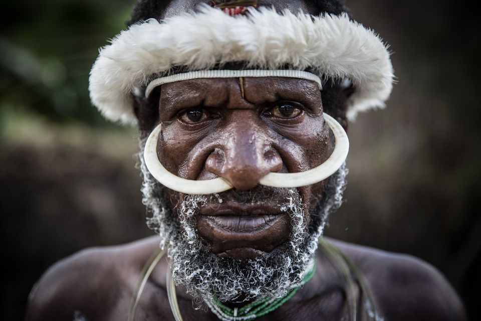

Wisata Papua 
Papua adalah provinsi terluas Indonesia yang terletak di bagian tengah Pulau Papua atau bagian paling timur wilayah Papua milik Indonesia. Belahan timurnya merupakan negara Papua Nugini. Provinsi Papua sebelumnya bernama Irian Jaya yang mencakup seluruh wilayah Papua Bagian barat. Sejak tahun 2003, dibagi menjadi dua provinsi dengan bagian timur tetap memakai nama Papua sedangkan bagian baratnya memakai nama Papua Barat. Papua memiliki luas 808.105 km persegi dan merupakan pulau terbesar kedua di dunia dan terbesar pertama di Indonesia.
Papua juga banyak menyimpan banyak tempat-tempat indah yang wajib di datangi.